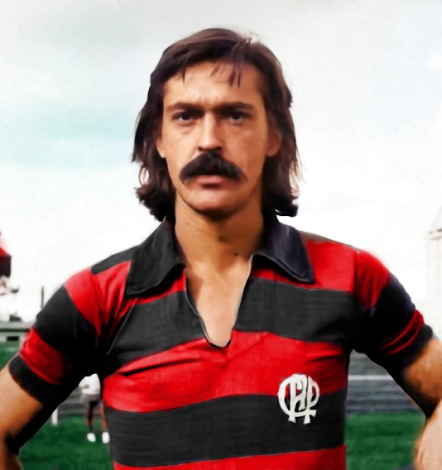
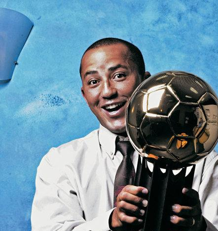
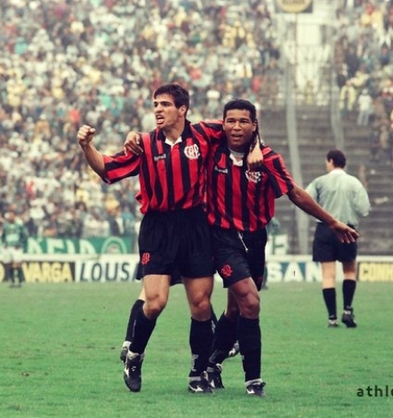
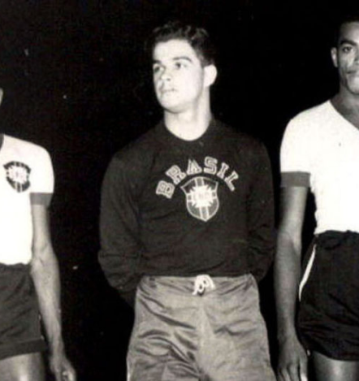

Athletico Paranaense
O Clube Atlético Paranaense surgiu da união de duas agremiações: o International e o América. A fusão foi concluída em 26 de março de 1924. O primeiro título da equipe já veio no ano seguinte: o Paranaense de 1925. Foi o primeiro de 21 troféus estaduais do Atlético - mais um Supercampeonato, em 2002. O principal título da história do clube foi o Campeonato Brasileiro de 2001, conquistado diante do São Caetano, com boas atuações do atacante Alex Mineiro. O time rubro-negro tem uma das melhores estruturas de trabalho do País, com o Estádio Arena da Baixada e o CT do Caju, e é o único clube do Estado a ter alcançado uma final de Copa Libertadores, em 2005.
Títulos
Campeonato Brasileiro: 1
Copa Sul-Americana: 2
Campeonato Paranaense: 26
Copa do Brasil: 1
Ídolos
- 
- 
- 
- 
Sicupira
Meio-campista voraz e de muita qualidade técnica, Barcímio Sicupira não é apenas considerado um dos maiores ídolos do Athlético Paranaense, mas sim o maior ídolo da história do clube. Contratado em 1968, ele chegou ao Furacão após passagem pelo Botafogo/RJ, tendo atuado ao lado de lendas como Nilton Santos, Gérson, Didi, Mané Garrincha, Jairzinho, Paulo Cézar Caju, Zagallo, entre outros gigantes do futebol brasileiro.
Alex Mineiro
Alexander Pereira Cardoso, ou simplesmente Alex Mineiro, chegou ao Athlético Paranaense no início de 2001. Revelado pelo América Mineiro em 1995, o atacante, conhecido por ser um exímio matador na área, passou por equipes como Cruzeiro EC, Vitória/BA, Bahia/BA e Ceará, até chegar ao Furacão.
Paulo Rinki
Atacante de muita habilidade e precisão nas finalizações, Paulo Rink anotou 80 gols com a camisa do Furacão, se tornando o 7º maior artilheiro da história do clube. Ali formaria também uma histórica dupla de ataque ao lado de Oséas. Em 1998, foi contratado pelo Bayer Leverkusen e agradou tanto os alemães que se naturalizaria para atuar na seleção da Alemanha. Seu retorno ao Athlético se deu em 2007, apenas para se aposentar, em uma breve passagem.
Caju
O goleiro Caju é um dos maiores ídolos do Athlético Paranaense no melhor estilo do futebol antigo. Ele dedicou toda a sua carreira ao clube, e como exemplo disso é considerado ate os dias de hoje como o maior arqueiro da história do Furacão, tanto que o nome do CT do clube foi escolhido em sua homenagem, o “CT do Caju”.
Arena da Baixada
O Estádio Joaquim Américo Guimarães, popularmente conhecido como Arena da Baixada ou Estádio Athletico Paranaense (como o clube vem adotando recentemente), é o estádio do Club Athletico Paranaense (CAP), localizado em Curitiba, capital do estado do Paraná, Brasil. É conhecido por ser o primeiro estádio, entre os utilizados para competições da CBF, a ser homologado para uso da grama sintética.
Torcida
A Torcida Os Fanáticos (TOF) é a principal torcida organizada do Clube Atlético Paranaense. Fundada em 24 de outubro de 1977 por um grupo de jovens torcedores apaixonados pelo Furacão, a Fanáticos cresceu, conquistou a admiração de toda a nação rubro-negra e se tornou uma referência. A torcida é responsável por entoar os gritos de guerra nos estádios e acompanha o Athletico em todas as partidas do clube. Suas faixas, caveiras e a bateria são fundamentais para deixar a festa mais bonita e empurrar o time rumo às conquistas.